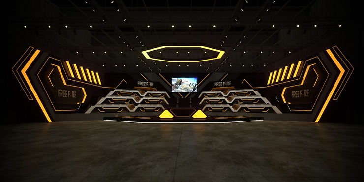

O jovem na caverna
Imaginemos jovens vivendo em uma caverna onde o último refúgio dos seus sonhos seja uma tela em que eles podem jogar um jogo eletrônico. Imaginemos que a vida destes jovens tem desafios tão imensos que dia após dia suas melhores possibilidades de sonhar existem apenas nessas telas. Imaginem que além disso, por trás dessas mesmas telas, eles encontram perfis em diversas redes sociais onde as pessoas postam fotos e vídeos sobre um sonho que existe no fundo da caverna. Nesse sonho no fundo da caverna tem mansões, casas, carros e festas que muitos nem conseguem imaginar.
Há também dinheiro, visibilidade, aceitação e diversas coisas que há tanto tempo todos eles sonham. Mas só é possível chegar lá no fundo da caverna se você olhar para o jogo em uma tela sem parar. E jogar, jogar e jogar.
Sendo assim, o jovem não enxerga nenhum outro caminho a não ser aquele que leva para o sonho no fundo da caverna. “Se eles estão lá, eu também posso chegar lá” – pensa cada um que sonha.
Mas aí imaginemos que um dia, um desses jovens, jogando, jogando e jogando, alcança o tão sonhado lugar. Ele chega ao fundo da caverna. Lá ele bate a sonhada foto na mansão. Faz aqueles tão sonhados vídeos, frequenta festas, tem visibilidade e aceitação. Mas fora das telas ele descobre que tem outras coisas no fundo da caverna que ninguém pode mostrar: Baixos salários, pressão por “performance”, 14 horas diárias de trabalho de segunda a segunda (porque tem que trabalhar mais para ser o melhor), dormir no chão, passar frio, sentir saudade de uma cama boa em casa, não ter folga, contratos que protegem seu empregador e que não lhe garantem nenhum direito caso seja demitido, um dia que falta comida e água, ou o dia que só tem pão para comer, tirar dinheiro do próprio bolso, família com medo e sem informações sobre o que acontece, não poder confiar em ninguém, não se enxergar fazendo outra coisa a não ser “treinar” naquela tela, viver 24 horas com ansiedade, ter insônia, medo de falar com as pessoas, brigas, discussões, assédio, ameaças, ver outros aparentemente “crescer” e sentir que parou no tempo, salário atrasar e “ter que entender o favor” de viver no fundo da caverna… Afinal, era o que esse jovem queria, não é mesmo?
Ele enxerga tudo isso ao seu redor e vê as pessoas dizendo para continuar, afinal, todo mundo aprendeu a dizer: “olha tudo que você tem que superar para estar aqui, continua, vai chegar tua hora”.
Aí certo dia ele encontra um jovem que aparece vez ou outra na caverna. Eles conversam por horas. Esse jovem conta tudo que ele passou e que descobriu um mundo fora da caverna (ele não vive mais dentro da caverna). O jovem conta que há diversas outras coisas que poderiam ser feitas na vida para crescer e ajudar a família.
Inicialmente, ele se sente perdido escutando isso, se questiona sobre o que está acontecendo, mas resolve olhar o mundo fora da caverna. Então ele descobre diversas pessoas fazendo escolhas diferentes das suas e construindo a “vida melhor” que ele tanto sonha e que pensava existir apenas no fundo da caverna.
Ele sai da caverna, se sente ofuscado pelo mundo lá fora, pois parece que todos estão “fazendo a mesma coisa”, mas ele arrisca em um novo caminho, um caminho para chamar de SEU. O tempo passa e ele começa a construir coisas na vida que nem imaginava. Ele percebe algo extraordinário nesse momento… Ele está no sonho que ele sempre buscou: Sem salários baixos, sem depender dos outros para ter água ou comida em uma mansão, um sonho que ele pode escolher quando descansar, quando viajar e que a pressão tem um limite. Ele descobre também que vive em um mundo com direitos. Percebe que existe hora para trabalhar e que atrasar pagamento não é normal.
Aqui ele percebe que as telas são uma ilusão para milhões Ele faz as contas de cabeça e estima que a cada 100 mil dos seus outros irmãos do “joguinho”, no máximo uns 5 (a palma de uma mão) por ano chegaria no sonhado fundo da caverna. Ele se assusta com essa possibilidade e fica triste por descobrir que o mundo dos sonhos, na verdade, massacra muitos sonhos porque só mostra o caminho para o fundo da caverna. Ele fica angustiado lembrando de quantos irmãos do “joguinho” ainda estão perdidos procurando o “caminho” para o fundo da caverna.
E por amor aos seus irmãos, ele volta à caverna. Ele conta para todos eles que há uma vida fora da caverna e que há pessoas apenas usando o poder dos seus sonhos. Mas ao voltar, seus irmãos, completamente assustados, lhe tratam como louco, como alguém “fraco mentalmente”. Então viram as costas e voltam a olhar para a tela do celular desprezando sua escolha pela vida fora da caverna.
** Este trecho é uma releitura do mito da caverna de Platão a partir do contexto do Free Fire no Brasil. Ele não representa necessariamente uma realidade.
Um olhar da psicologia sobre condições de trabalho no Free Fire
É comum escutarmos falar sobre o crescimento do cenário de Esportes Eletrônicos no Brasil. Assim como é comum que as pessoas conheçam a potência do Free Fire no cenário brasileiro. Para quem não conhece nada do Free Fire, se trata de um jogo eletrônico da categoria dos Battle Royales. Sua desenvolvedora, a Garena Free Fire, no ano de 2021, faturou mais de 6 bilhões de reais e bateu diversos recordes.
Além disso, é um dos Esportes Eletrônicos em que há um número significativo de profissionais de psicologia atuando. Sendo considerado como um cenário de “oportunidades” por muitos.
Mas vamos voltar ao mito da caverna e nos questionar: De que tipo de oportunidades estamos falando?
Minha primeira participação no cenário profissional de Free Fire se deu em 2020, no auge da pandemia, ainda nas divisões de acesso no cenário brasileiro deste esporte eletrônico. Em 2021 tive a oportunidade de trabalhar em cenário profissional na segunda divisão na categoria mobile (competição em celular) e emulador (competição em computador) e deste período em diante pude prover assistência psicológica à equipes e atletas disputando as divisões principais do cenário do Free Fire, sendo a última experiência em agosto de 2022.
Digo isto para dizer que tive a oportunidade de conhecer jovens e treinadores buscando o sonho de chegar à elite de um esporte eletrônico, assim como conheci aqueles que viveram a experiência de estar na elite e aqueles que trilharam outros caminhos em sua vida, como a faculdade. E daqui em diante trarei alguns fatos e reflexões que considero relevantes para pensarmos enquanto profissionais de Psicologia do Esporte. A primeira delas: Quais são as reais condições de trabalho de atletas no Free Fire? A segunda: Quais são as reais condições de trabalho de psicólogos esportivos no Free Fire?
Quais são as reais condições de trabalho de atletas no Free Fire?
Apesar do significativo faturamento da Garena nos últimos anos como dito anteriormente e até mesmo do investimento gigantesco das organizações em mansões, a remuneração média de atletas de Free Fire não é das melhores. O Free Fire Mania revelou que a média salarial tem girado na casa dos R$ 2.000 (dois mil reais), sendo exceção aqueles que jogadores que dedicam horas semanais à atividades como streamer ou influenciador. Link da matéria: https://www.freefiremania.com.br/noticia/quanto-ganha-um-jogador-de-free-fire-profissional-ou-amador-confira-os-valores.html
Apesar de muitos profissionais do campo do direito ressaltarem que as legislações existentes são capazes de atender as necessidades do esporte eletrônico, não é possível visualizar como o faturamento bilionário de uma desenvolvedora reflete nas condições de trabalho de atletas. Tanto que é comum vez ou outra escutarmos sobre irregularidades trabalhistas nos esportes eletrônicos, como foi o caso noticiado pelo advogado Nicholas Bocchi com o título “Ministério Público do Trabalho mira clubes de esporte eletrônico”. Link da matéria: https://leiemcampo.com.br/ministerio-publico-do-trabalho-mira-clubes-de-esporte-eletronico/.
Longas cargas horárias de trabalho, mistura entre ambientes de trabalho e privativos, quartos compartilhados, ausência de folgas, menores de 18 anos em situação irregular de trabalho e gestores morando nas mesmas casas que atletas tem sido preocupação dos órgãos públicos que tem olhado para os esportes eletrônicos.
Esta conjuntura geralmente é atrelada à um ambiente de grande pressão, afastamento do convívio familiar, abandono escolar, pouca ou nenhuma assistência jurídica e social, contratos condicionados à performance, multas rescisórias que desfavorecem atletas e a diminuição da rede de apoio ao trabalhador/atleta que não seja condicionada à própria organização.
Por isso, ao contrário do que é “vendido” pelas grandes organizações e pela própria Garena Free Fire, o contexto de trabalho no Free Fire, é típico de um contexto que expõe pessoas à novas vulnerabilidades. Novas porque muitos atletas deste cenário tem sua história marcada por condições sociais mais vulneráveis se comparadas com outros esportes eletrônicos.
Para melhor compreensão do que estou afirmando, vale a leitura do artigo intitulado “Quem não sonhou em ser um jogador de videogame? Colonialidade, precariedade e trabalho de esperança em Free Fire”. Link para leitura: https://periodicos.uff.br/contracampo/article/view/50495
Mas por que esta é uma questão para a psicologia do esporte?
Se partirmos da compreensão de processos motivacionais básicos, sabemos que tais condições não são consideradas as ideais para a construção de equipes de alta performance em nenhum contexto. Concomitantemente, sabemos este cenário de trabalho também expõe atletas à significativos fatores de risco para sua saúde mental.
Contextos com más condições de trabalho são aqueles que reproduzem a maior parte das iniquidades e vulnerabilidades sociais já existentes (certamente um importante tema para a Psicologia Social do Esporte).
Considero plausível o interesse de muitas organizações e das próprias desenvolvedoras pela inexistência de mecanismos legais que regulamentem a prática de formação de atletas de esporte eletrônico no país. A invisibilidade torna possível um contexto em que a palavra “direitos” não seja sequer pronunciada em uma conversa. Por estes motivos, o contexto que hoje se apresenta para o Free Fire brasileiro demanda, em especial, a atuação dos órgãos públicos que atuam em defesa da sociedade e principalmente dos jovens brasileiros.
Quais são as reais condições de trabalho de psicólogos esportivos no Free Fire?
Por fim, e de maneira mais sucinta, gostaria de ressaltar que também é preocupante o contexto das condições de trabalho de psicólogos esportivos no Free Fire no Brasil. Certamente é possível encontrar alguns profissionais com maior segurança (social, financeira, contratual e direitos trabalhistas) em organizações que trabalhem com Free Fire. Porém, essa não é a realidade da maioria dos profissionais brasileiros.
O Split 6 da Liga Brasileira de Free Fire contava com psicólogos atuantes em quase todas as equipes da série A. Mas pouco se discute sobre as condições de trabalho neste ambiente. Qual carga horária psicólogos tem cumprido? Quais os tipos de serviços têm sido ofertados para este contexto? Quais as condições de remuneração? Quantos atletas são acompanhados? Qual formato de contratação? CLT ou prestação de serviço? Por que há trocas constantes de psicólogos? Há liberdade para atuação dos profissionais dentro das organizações? O Sistema Conselhos tem discutido sobre a atuação neste novo cenário? E como tem se dado a assistência à criança e ao adolescente tendo em vista que é o maior público assistido no Free Fire?
Muitas dúvidas pairam sobre a nossa atuação e certamente, assim como tem sido uma preocupação as condições de trabalho às quais atletas têm sido expostos no Free Fire, também deve ser preocupação as reais condições de trabalho de especialistas da psicologia neste novo campo.
Obviamente o intuito deste texto não é gerar desestímulo para quem estiver adentrando este contexto, pelo contrário, é uma possibilidade de mostrar que precisamos pensar de fora da caverna às vezes ou estaremos expostos às condições de um contexto emergente, desconhecido e que precisa dos profissionais de psicologia discutindo a realidade sob o olhar da ciência e da regulamentação da profissão.
Considero o Free Fire um dos esportes eletrônicos mais promissores para o cenário brasileiro, porém, a depender do seu contexto e das condições às quais muitos jovens e profissionais podem ser submetidos, é um contexto que pode ser capaz de manchar o que o esporte eletrônico vem construindo no mundo nos últimos anos.
Afinal, as pessoas, por mais jovens que sejam, são plenamente capazes de perceber que às vezes sua melhor escolha será mergulhar em outros mundos fora da caverna.

Matheus Vasconcelos
Amazonense, psicólogo, especialista em psicologia do esporte e mestre em saúde pública (Fiocruz Amazônia).
Associado ABRAPESP e integrante da Comissão de Atualização Profissional.
Idealizador da Escola de Psicologia do Esporte (E.P.E) e Escola de Psicologia do Atleta (E.P.A).